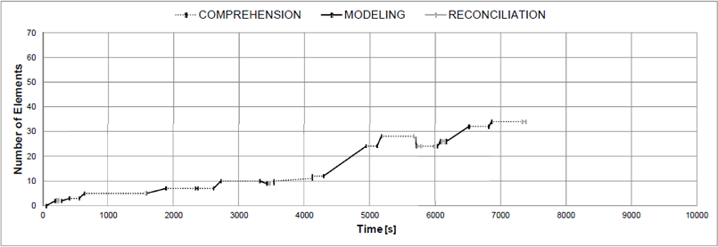

This process does not start with a long comprehension phase, but with immediate modeling actions. The first half of the graph is flat and comprises long comprehension phases yet short modeling phases. In the second half, the ratio changes and long modeling phases alternate with comprehension phases. While there are some reconciliation phases, all of these are of a rather small size. Furthermore, the graph shows two modeling 'dips', meaning that more elements are deleted than created in these phases.

The chunk size for this model is small (2.95) along with an average number of iterations (19). Furthermore, we observe an average number of reconciliation breaks (26.6%) and very much time being spent on comprehension (72.2%).
The replay shows that the modeler uses deletion operations very frequently. After elements are added, some of them are immediately deleted again. In this way, the overall model size increases only sluggishly. In addition, significant reconciliation takes place by deleting and re-adding elements instead of layouting them. We characterize this strategy as 'swinging modeling'.
The created model contains various syntax errors. When neglecting these errors, no behavioral anomalies are observed. The model shows a very weak approximation of the expected model in terms of graph edit distance, as the scenario is covered only partially.